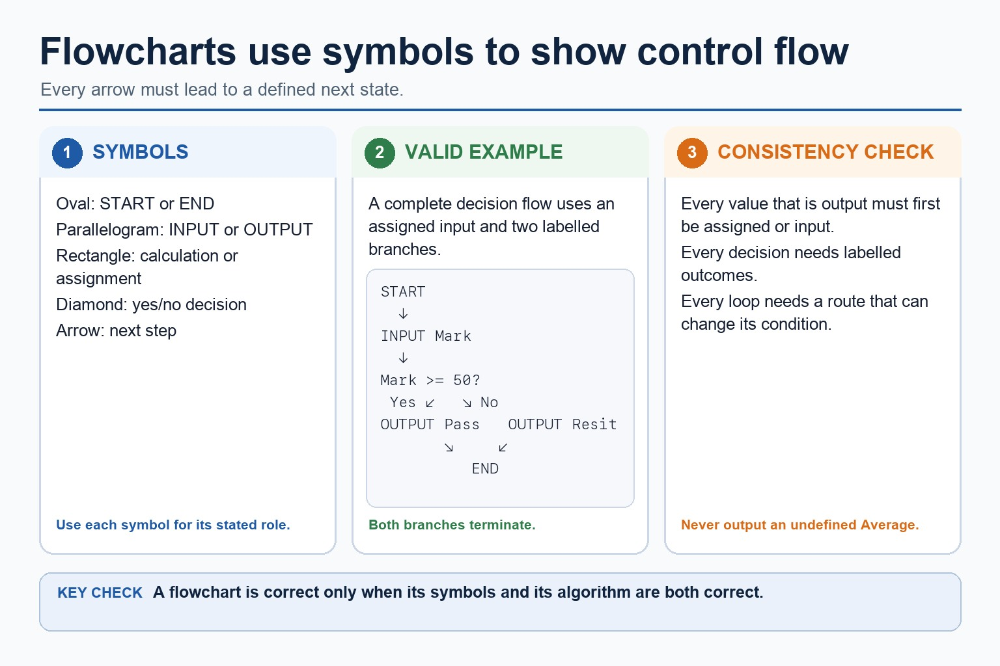
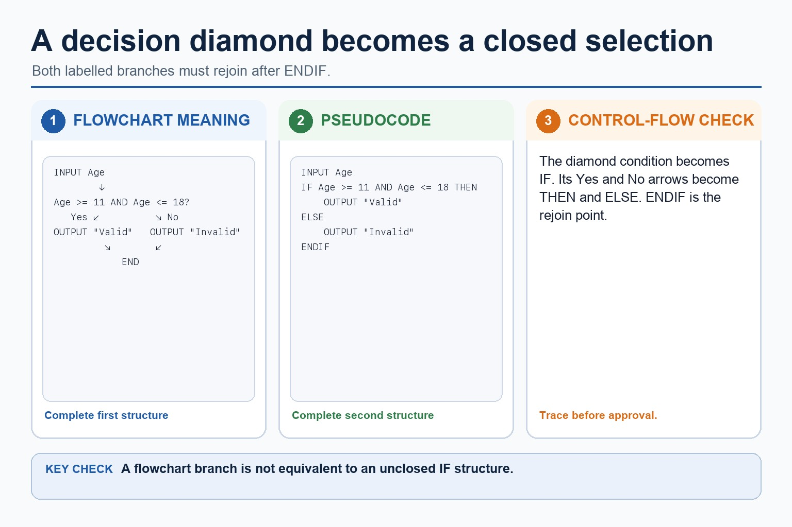
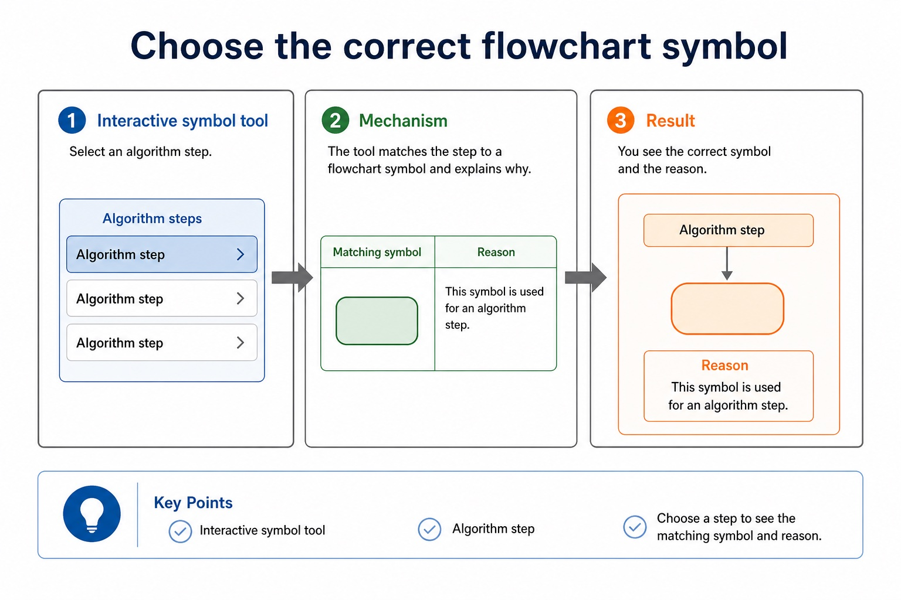
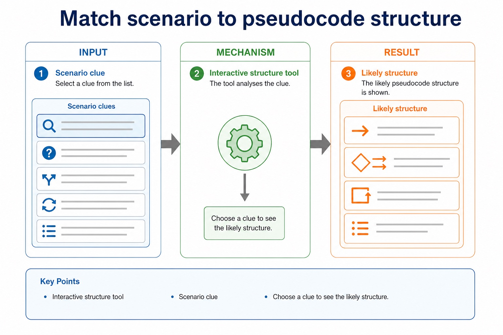

Same algorithm, two notations: one draws the route, one writes the instructions.
Flowcharts show algorithm structure visually. Cambridge-style pseudocode expresses the same logic in
structured text. This lesson focuses on correct symbols, readable pseudocode and translating between the
two without slipping into Java syntax.
Recognisestandard flowchart symbols for input/output, process, decision and start/end
WriteCambridge-style pseudocode using INPUT, OUTPUT, IF, ELSE, ENDIF and loops
Translaterepresent the same algorithm as a flowchart or pseudocode outline
START
↓
INPUT Mark
↓
Mark >= 50?
Yes → PassNo → Resit
Flowchart question: which path? Pseudocode question: which branch?
Why this matters
Paper 2 awards marks for clear logic. Correct notation helps the examiner see the condition, branch, loop and output.
Common trap
A diamond is for a decision, not for every exciting moment in the algorithm. Flowchart shapes have jobs.
Warm-up hook
The vending machine is not impressed by vague arrows
Classify each step from a vending machine algorithm. If every box is a rectangle, the decision has escaped.
Choose a step to classify its flowchart symbol.
Knowledge explanation
Flowcharts use symbols to show control flow
Symbol
Meaning
Example
START/END
terminator
start or stop the algorithm
INPUT/OUTPUT
data entering or leaving
INPUT Mark, OUTPUT Average
Process
calculation or assignment
Total ← Total + Mark
Decision?
yes/no condition
Mark >= 50?
→
flow line
shows the next step
Chinese support: flowchart = 流程图；terminator = 开始/结束符；decision = 判断；flow line = 流向线。
Flowcharts use symbols to show control flow

Flowcharts use symbols to show control flow: source-grounded visual explanation.
INPUT Mark
IF Mark >= 50 THEN
OUTPUT "Pass"
ELSE
OUTPUT "Resit"
ENDIF
Count-controlled iteration
Total <- 0
FOR Count <- 1 TO 5
INPUT Mark
Total <- Total + Mark
NEXT Count
OUTPUT Total
Exam reminder: use Cambridge-style keywords. Java braces, semicolons, `System.out.println` and `&&` are implementation support, not the expected pseudocode style.
One entryFlowcharts should have a clear start and a clear direction of travel.Decision labelsDecision outputs should be labelled, usually Yes/No or True/False.IndentationIndented pseudocode shows which statements belong inside a branch or loop.Matching endingsUse ENDIF, NEXT, ENDWHILE or equivalent to close a structure clearly.Meaningful namesUse Mark, Total, Count, Found instead of X1 unless the question gives X1.No mixed syntaxDo not mix Java braces with Cambridge pseudocode keywords in the same answer.
Readable notation earns marks more easily
Readable notation earns marks more easily: source-grounded visual explanation.
Lesson fact: Notation rules
Lesson fact: One entry Flowcharts should have a clear start and a clear direction of travel.
Lesson fact: Decision labels Decision outputs should be labelled, usually Yes/No or True/False.
Lesson fact: Indentation Indented pseudocode shows which statements belong inside a branch or loop.
Lesson fact: Matching endings Use ENDIF, NEXT, ENDWHILE or equivalent to close a structure clearly.
Lesson fact: Meaningful names Use Mark, Total, Count, Found instead of X1 unless the question gives X1.
Lesson fact: No mixed syntax Do not mix Java braces with Cambridge pseudocode keywords in the same answer.
Equivalent forms
A diamond becomes IF...THEN...ELSE
Flowchart idea
INPUT AgeAge >= 11 AND Age <= 18?Yes: OUTPUT "Valid" | No: OUTPUT "Invalid"
Pseudocode equivalent
INPUT Age
IF Age >= 11 AND Age <= 18 THEN
OUTPUT "Valid"
ELSE
OUTPUT "Invalid"
ENDIF
A diamond becomes IF...THEN...ELSE

A diamond becomes IF...THEN...ELSE: source-grounded visual explanation.
Choose a step to see the matching symbol and reason.
Choose the correct flowchart symbol

Choose the correct flowchart symbol: source-grounded visual explanation.
Lesson fact: Interactive symbol tool
Lesson fact: Algorithm step
Lesson fact: Choose a step to see the matching symbol and reason.
Interactive structure tool
Match scenario to pseudocode structure
Choose a clue to see the likely structure.
Match scenario to pseudocode structure

Match scenario to pseudocode structure: source-grounded visual explanation.
Lesson fact: Interactive structure tool
Lesson fact: Scenario clue
Lesson fact: Choose a clue to see the likely structure.
Interactive mini converter
Convert a flowchart pattern into pseudocode
Choose a pattern to generate Cambridge-style pseudocode.
Worked examples
Notation choices in common problems
Practice with instant checking
Flowchart and pseudocode notation
Type concise answers. Use Show answer after committing to a response.
Mistake debugging
Fix notation mistakes
Exam-style questions
Original Cambridge-style notation questions with expandable MS
These questions target symbols, pseudocode structure and translation between representations. MS uses strict Cambridge-style expectations.
Extra practice
Structured English, flowcharts and pseudocode conversion
Structured English expresses sequence, selection and repetition using controlled natural-language statements and indentation. A flowchart uses standard symbols and arrows; pseudocode uses Cambridge constructs. All three must preserve the same decisions and loop boundaries.
Convert by identifying inputs, outputs, conditions and repeated actions before translating notation. Do not translate shapes or sentences word for word while losing control flow.
Worked example: Validate a mark
Structured English: INPUT Mark; WHILE Mark < 0 OR Mark > 100, OUTPUT error and INPUT Mark; ENDWHILE. The flowchart returns from the invalid decision branch to input; pseudocode uses a pre-condition WHILE loop.
Targeted practice
1. Which flowchart symbol represents a decision?
Show answer
Diamond.
2. What must remain identical during conversion?
Show answer
The algorithm's control flow, conditions, inputs and outputs.
3. Why is indentation useful in structured English?
Show answer
It shows which steps belong inside a selection or loop.
Exam-style question
4 marks
Convert this structured English to pseudocode: input Age; if Age is at least 18 output Adult, otherwise output Minor.
Show MS
B1 INPUT Age
B1 IF Age >= 18 THEN
B1 OUTPUT Adult and ELSE OUTPUT Minor
B1 closes with ENDIF / coherent Cambridge syntax
Summary
Notation checklist
SymbolsUse terminator, input/output, process, decision and flow lines for the correct jobs.
KeywordsUse Cambridge-style INPUT, OUTPUT, IF, ELSE, ENDIF, FOR, NEXT and WHILE structures.
ClarityLabel branches, indent blocks and keep Java syntax out of exam pseudocode answers.
Homework
Clear tasks for consolidation
Task 1: Symbol auditDraw a small flowchart for pass/resit. Label each symbol with its purpose: terminator, input/output, process or decision.Task 2: Pseudocode rewriteWrite Cambridge-style pseudocode for validating an age from 11 to 18 inclusive. Include INPUT, IF, ELSE and ENDIF.Task 3: TranslationConvert a count-controlled flowchart for five marks into pseudocode using FOR...TO...NEXT and a running Total.